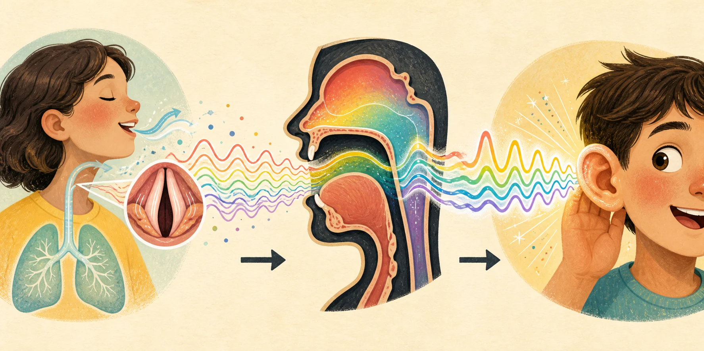
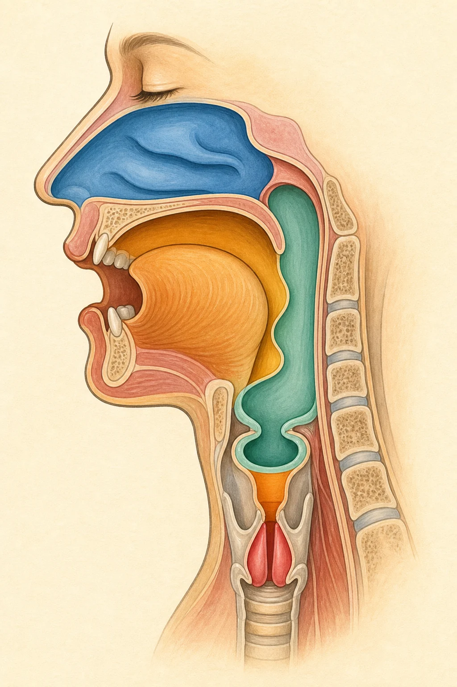
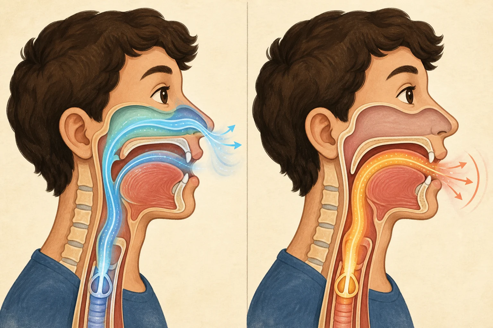
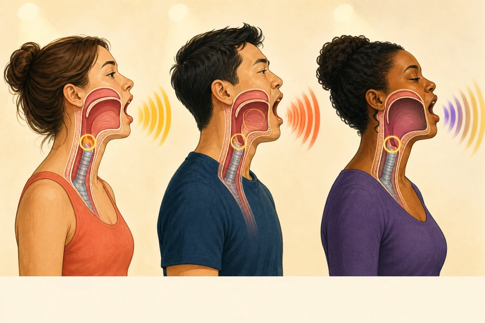
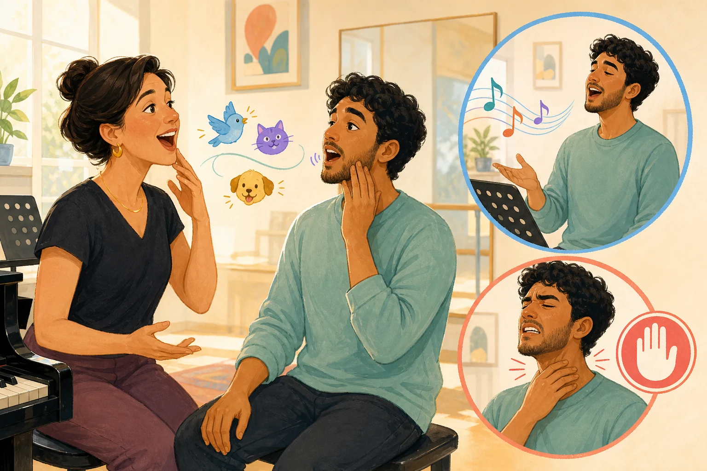

bright · clear · brassy · ringy하게 느껴지는 소리.
트왱은 높은 음이 아니라
밝고 또렷하게 들리는 음색과 전략이에요.
에피후두관/AES 협착, 메가폰형 성도, F1·F2 상승.
비성, 벨팅, 3 kHz 한 점, 목 전체 조임, 만능 효율 버튼.
아주 쉬운 비유성대는 색연필 상자처럼 여러 배음을 만들고, 성도는 그중 어떤 색을 진하게 칠할지 고르는 필터예요. 트왱은 밝은 색들이 눈에 잘 띄도록 함께 조절된 결과에 가깝습니다.
확립 · 근거가 단단함반복 관찰 · 일반화 주의예비 · 작은 연구나 모델미해결 · 단정 불가
1 · 먼저 이름표부터
“트왱”은 한 가지 뜻만 가진 말이 아니에요
같은 철자를 보고 모두 같은 발성을 측정했다고 생각하면 연구가 뒤섞입니다.
| 쓰임 | 가리키는 것 | 주의점 |
|---|---|---|
| 지각 용어 | 밝고 날카롭고 두드러지는 음색 | 청자의 판단이지 해부 이름이 아님 |
| 발성 전략 | 그 음색을 만드는 조절 묶음 | 사람마다 묶는 방식이 다름 |
| Estill Oral Twang | AES 협착과 연구개 상승 등을 포함한 교육 모델 | 개별 연구가 Estill 전체 정의를 자동 증명하지 않음 |
| Estill Nasal Twang | 밝기에 비강 결합이 더해진 변종 | 트왱 자체와 비성을 분리해 보여 줌 |
| twang-like voice | 정의 충돌을 피하려는 연구 용어 | Saldías 계열 연구에서 사용 |
| 지역 방언 twang | 컨트리·애팔래치아 말투의 콧소리 인상 | 보컬 quality의 twang과 충돌 가능 |
| ring / squillo / singer’s formant | 대개 2.5–3.5 kHz 부근 에너지 뭉치 | 겹칠 수 있지만 동일하지 않음 |
| CVT Overdrive / Edge | CVT가 나누는 밝고 강한 소리 | 트왱과 1:1 번역되지 않음 |
왜 이렇게 뜻이 많아졌나요?
1930년경 Paget과 사전적 용례는 twang을 지역 말투의 “콧소리 발음” 쪽으로 썼습니다. 1980년대 이후 Estill은 AES 중심 보컬 quality의 이름으로 사용했습니다. 오늘날 연구에는 역사적·장르적·교육적 쓰임이 함께 남아 있습니다.
2 · 네 개의 서랍
느낌, 소리, 몸, 연습 말을 분리해요
서로 관련은 있지만 같은 문장은 아닙니다.

지각
청자가 bright, clear, brassy, metallic, cutting, prominent하다고 듣는가?
음향
배음, formant, 스펙트럼 기울기, 대역 에너지, SPL, 무게중심이 어떻게 생겼는가?
생리
AES, 인두, 혀, 턱, 입술, 후두, 연구개, 성대 접촉, 기류와 압력이 어떻게 움직였는가?
교육 단서
NG, NAY, HEY, “어이!”, 오리·마녀 흉내와 앞쪽 진동감.
“코 주변이 울린다” = 감각.
“비강이 열린다” = 생리·음향 주장.
“트왱이다” = 음질 분류.
3 · 소리의 물리
성대가 만들고, 성도가 골라 키워요
“3 kHz 소리를 새로 만든다”보다 “이미 있는 배음이 공명으로 강조된다”가 정확합니다.
음원
성대가 열리고 닫히며 성문 기류 펄스를 만듭니다. 닫힘이 빠르고 펄스가 날카로우면 고차 배음이 상대적으로 강해질 수 있습니다.
필터
성도는 관 악기처럼 특정 주파수를 공명시킵니다. 그 공명주파수가 F1, F2, F3 같은 formant입니다.
방사
입술 밖으로 나간 소리는 고주파가 조금 더 잘 방사되는 경향이 있습니다. 방과 반주도 최종 두드러짐에 관여합니다.
| 모양 변화 | 대략적인 음향 방향 | 주의 |
|---|---|---|
| 성도 단축: 후두 상승, 입술 돌출 감소 | formant 전반 상승 경향 | 후두 높이 하나가 정의는 아님 |
| 입 열림·턱 하강 증가 | 보통 F1 상승 | 모음과 개인에 따라 다름 |
| 혀의 앞뒤 이동 | 특히 F2 변화 | 모음 색깔도 바뀔 수 있음 |
| 인두 협착 | 트왱 문헌에서 F1 상승과 자주 연결 | 모음 의존적 |
| 좁은 에피후두 + 넓은 인두 | 고전적 singer’s formant 조건 | 전형적 트왱 기하와 다를 수 있음 |
| 에피후두·인두가 좁고 입이 열림 | 흔히 “메가폰형” | 유용한 스케치이지 필수 자세 아님 |
성도가 성대에 되먹임할 수도 있어요
에피후두관이 좁아짐성문 위 음향 부하의 관성 리액턴스가 커질 수 있음
기류 펄스가 한쪽으로 기울어짐source–filter가 독립적이지 않은 비선형 결합
MFDR과 고주파 출력이 커질 가능성같은 진동 진폭에서 음향 출력이 유리할 수 있다는 모델
실제 사람의 이득은 별도 문제호흡을 더 밀면 이론적 경제성 이득을 지울 수 있음
근거 구분: 비선형 source–filter 결합은 발성 이론에서 확립되어 있지만, 모든 트왱 가수가 그 이득을 실제로 얻는다는 사람 데이터는 아직 예비 수준입니다.
4 · 목 안의 모양
AES는 버튼 하나도, 근육 하나도 아니에요
가장 반복적으로 보인 단서는 에피후두관과 AES 부근의 협착입니다.

에피후두관
진성대 위에서 후두 입구까지 이어지는 짧은 관. Titze의 관성 부하 이론이 주로 다루는 공간입니다.
AES
피열후두개 주름과 후두개가 만드는 후두 입구의 괄약 영역. 근육 하나가 아니며 에피후두관의 출구입니다.
무엇이 관여할까?
피열후두개근, 피열연골의 접근, 후두개 위치, 혀뿌리 등 여러 조직이 함께 관여할 수 있습니다.
가성대와는 달라요
가성대는 AES보다 아래, 진성대 바로 위에 있습니다. 진성대를 덮는 가성대 협착은 과기능·거친 음질과 더 자주 연결됩니다.
메가폰 스케치좁은 “마우스피스” 같은 에피후두관과 더 열린 입이 연결되는 모양입니다. 입술이 열린다는 뜻이지 구강 전체가 무조건 넓어진다는 뜻은 아닙니다.
사람을 실제로 보니
| 연구 | 표본·방법 | 관찰 | 한계 |
|---|---|---|---|
| Yanagisawa 1989 | 전문 가수 5명, 후두경 | twang, belt, opera 모두 AES 협착 | AES는 유력 부품이지만 트왱 전용이 아님 |
| Story 2001 | MRI 면적함수 | 성도 단축, 입술 열림, 구강 약간 협소 | yawn 비교 축을 다른 연구와 혼동 금지 |
| Perta 2021 | 2명, 앙와위 MRI, /i/ | 인두 감소, 측방 협착, 후두 약간 상승, VP 닫힘 | n=2, speech /i/와 twang /i/ 비교 |
| Saldías 2021 | 남성 CCM 1명, CT, 큰소리 | 고·저음 메가폰형, 입 열림·성도 단축·에피후두 협착 | n=1, twang-like 과제 |
| Jelinger 2024 | 5명, 앙와위 MRI, /i/ | AES 5/5 감소(11.8–52.4%), 구인두 4/5 감소(18.8–49.6%), ML이 AP보다 흔함 | 개인차, 앙와위가 후두 상승을 누를 수 있음 |
후두 높이
중립보다 약간 높은 경향이 반복되고 성도 단축 → F1·F2 상승 경로와 맞습니다. 그러나 높은 후두도 낮은 후두도 정의가 아닙니다.
조음
턱, 입술, 혀가 바뀌면 F1·F2도 움직입니다. 트왱은 AES만 켜는 스위치라기보다 모음 색깔까지 바꾸는 전략일 수 있습니다.
MRI에서 ML 감소가 자주 보였다고 “ML은 무조건 좋다”거나, 교육 모델이 피한다고 “무조건 나쁘다”고 단정할 수 없습니다.
5 · 성대 음원
필터만 바뀌는 것도 아니에요
성대가 더 닫히는 방향이 보일 때도 있지만 모든 트왱의 필수조건은 아닙니다.
변수를 직접 바꿔 보니
인두 면적 감소, 성도 단축, 개방률 OQ 감소를 함께 적용할수록 트왱 평점이 올라갔습니다. 하나만 바꿀 때 효과가 작았고 단독 변수 중 OQ 영향이 가장 컸습니다. 청자 신뢰도는 낮았습니다.
더 닫힌 음원 쪽
SPL 증가, 기류 기반 닫힘률 증가, 기류 펄스 진폭 감소, H1·H1−H2 감소, NAQ 감소 경향과 F1·F2 상승/F3·F5 하강이 관찰됐습니다.
음높이에 따라 다른 조절
큰소리 twang-like에서 내전 증가, 약 3 kHz 봉우리, 2 kHz 아래 변화와 조밀한 formant 구조가 보였습니다. 저·고음의 조절 정도가 달랐습니다.
큰소리끼리 비교하니
EGG 접촉률과 NAQ는 유의차가 없고 공기압은 더 높았습니다. SPL은 저음에서 차이가 없고 고음에서만 더 높았습니다.
2010년과 2025년 결과는 왜 달라 보이나요?
- 기류 역필터 닫힘률과 EGG 접촉률은 같은 숫자가 아닙니다.
- 2010년은 1명이 여러 강도, 2025년은 10명이 양쪽 모두 이미 큰소리였습니다.
- 강한 에피후두 협착에서는 역필터가 부정확할 수 있습니다.
- “모든 트왱은 세게 붙인다”도 “성대는 전혀 안 바뀐다”도 현재 근거보다 강합니다.
6 · 음향과 듣기
최근 데이터는 F1·F2 쪽을 크게 가리켜요
2024년 연구는 자극 76개를 썼지만 신뢰도가 충분했던 평가자 4명과 [a:] 한 모음이라는 한계가 있습니다.
| 변수 | 상관 | 쉽게 말하면 |
|---|---|---|
| F1 | +0.90 | 높을수록 트왱 평점이 강하게 높아짐 |
| F2 | +0.74 | 높을수록 강한 관련 |
| F1–F3 간격 | −0.82 | 좁을수록 트왱답게 들림 |
| F3 | −0.52 | 낮을수록 중간 정도 관련 |
| 1–2 kHz 에너지 | +0.51 | 중간 정도 관련 |
| 2–3 kHz 에너지 | +0.42 | 중간 정도 관련 |
| F4·F5·3 kHz 초과 | 약함 | 보편 도장으로 보기 어려움 |
상관 ≠ 원인. F1만 올린다고 트왱이 되지는 않습니다. 필터·합성 자극을 직접 조작했다는 점에서는 단순 녹음 상관보다 원인에 가까운 정보도 있습니다.
“트왱 = 3 kHz”라는 말은 어디서 왔을까?
singer’s formant
남성 클래식 가창에서 F3–F5가 약 2.5–3.5 kHz에 모이는 현상.
1989 AES 연구
AES 협착을 ringing과 고주파 에너지에 연결하고 twang도 같은 묶음에 포함.
2021 twang-like
약 3 kHz 봉우리는 있었지만 F3–F5 클러스터는 없었고 주로 F4 변화로 설명.
결론3 kHz 부근 에너지가 커질 수는 있지만 필수 표지는 아닙니다. 최신 지각 자료의 큰 상관은 F1·F2, F1–F3 간격, 1–3 kHz 쪽입니다.
SPL
마이크에서 측정된 물리적 음압.
Loudness
사람이 느끼는 크기. 귀는 특히 2–5 kHz에 민감합니다.
Projection
반주·공간을 뚫고 두드러지는 능력. SPL 하나와 같지 않습니다.
“얼굴 앞으로 보낸다”는 감각은 유용할 수 있지만 음원이 얼굴에 있다는 뜻은 아닙니다. 음원은 성문, 필터는 성도입니다.
7 · 힘과 효율
“쉽게 크게”는 아직 마법 공식이 아니에요
효율, 경제성, 노력, 압력은 서로 다른 단어입니다.
Efficiency
음향 파워 ÷ 공기역학 파워.
Economy
음향 출력 ÷ 성대 충돌 스트레스.
Effort
가수가 느끼거나 근육이 쓰는 노력.
성문하압
폐에서 미는 압력. 노력 전체는 아님.
유리할 가능성
에피후두 협착 → 관성 부하 → 펄스 skew → MFDR 증가 → 같은 충돌에서 더 큰 고주파 출력이라는 경로가 가능합니다.
자동 이득은 확인 안 됨
10명의 큰소리 비교에서 QOCR 차이는 없고 공기압은 더 높았습니다. Npeak도 예상과 달리 줄었습니다. 측정 한계와 과보상 가능성이 있습니다.
“이득이 확인되지 않았다”와 “비효율이 증명됐다”는 다릅니다. 10명 파일럿, 큰소리 과제, 간접 지표의 한계를 함께 읽어야 합니다.
임상에서는 쓰이나요?
Lombard & Steinhauer(2007)는 저음량 음성 6명에서 twang therapy 뒤 SPL, 기류, VHI 개선을 보고했습니다. 예비 임상 근거이지 건강한 가수의 성대를 자동 보호한다는 증거는 아닙니다.
8 · 트왱과 비성
겹칠 수 있지만 문이 달라요
비성은 코로 가는 통로, 트왱은 성대·에피후두·인두·조음의 밝기 전략입니다.

비성
VP port가 열려 비강이 음향적으로 결합됩니다. 항포르만트, 저주파 변화, nasalance 등으로 측정합니다.
트왱
에피후두·인두·혀·턱·입술과 성대 음원의 조절. 비강 개방은 필요조건이 아닙니다.
- 1992년 연구는 oral speech, nasal speech, oral twang, nasal twang을 구분했습니다.
- Estill도 Oral Twang과 Nasal Twang을 따로 둡니다.
- 2021·2024 MRI의 트왱 과제에서는 VP port가 닫히고 연구개가 올라가 있었습니다.
- 컨트리 방언 twang은 비성을 포함할 수 있지만 oral twang 정의와 같지 않습니다.
코 앞이 울리면 비성일까?안면 진동, 골전도, 조음 감각일 수 있습니다. 느낌은 cue이지만 VP port가 열렸다는 측정은 아닙니다.
NG는 실제 비음 자음입니다. 밝기를 찾는 입구가 될 수 있다는 것, 트왱이 비성이라는 것, AES를 고립 훈련한다는 것은 다른 주장입니다.9 · 이웃 개념
공유 부품이 있어도 같은 기계는 아니에요
트왱, 벨팅, 오페라 ring은 겹칠 수 있지만 동일어가 아닙니다.

| 트왱 | 벨팅 | singer’s formant | |
|---|---|---|---|
| 핵심 | 밝은 음질/전략 | 강하고 speech/chest-like한 양식 | 오페라 projection 공명 |
| 후두 | 종종 같거나 조금 높음 | 등록·두께·내전 논의가 큼 | 종종 낮음 |
| 인두 | 상대적으로 좁음 | 다양 | 상대적으로 넓음 |
| 입 | 더 열린 경향 | 밝고 열린 조음이 흔함 | 모음에 따라 다름 |
| 음향 | F1·F2 상승, 3 kHz는 선택적 | 강한 음원·등록·공명 결합 | F3–F5 약 3 kHz 클러스터 |
AES 협착
twang/ringing의 후보. belt와 opera에서도 보입니다.
가성대 내전
과기능, harsh, muscle tension dysphonia와 더 자주 연결됩니다.
Pressed phonation
진성대 음원 문제. 동반될 수 있지만 정의는 아닙니다.
트왱이 과기능으로 미끄러질 위험과 트왱 자체를 “목 전체 조임”으로 정의하는 것은 다릅니다.
10 · 연습과 교육
근육 이름보다 목표 소리를 찾아요
cue는 목적지로 가는 표지판이지 해부 회로도가 아닙니다.

NAY · HEY
전설 모음은 F2가 높고 밝기 쉽고 짧은 외침은 후두·내전·입을 함께 바꾸기 쉽습니다.
NG
밝기 감각의 입구가 될 수 있지만 비강을 켜는 자음입니다.
오리·마녀·“어이!”
목표 음색을 찾는 캐릭터 cue이지 특정 근육의 비밀번호가 아닙니다.
귀로 목표를 정해요
밝고 선명하고 두드러지는지를 먼저 듣습니다.
cue를 가볍게 시험해요
NAY, HEY, 어이, 캐릭터 흉내 중 편한 입구를 찾습니다.
비성과 밝기를 따로 들어요
코를 막아도 밝기가 남는지 비교합니다. 완전한 검사는 아닙니다.
거친 잠김을 피합니다
가성대 압박처럼 거칠거나 아프면 목표에서 벗어난 것입니다.
모음과 가사로 옮겨요
cue에서 끝나지 않고 실제 노래 문장으로 이동합니다.
숨 과보상을 줄여요
압력을 과하게 올리면 공명 이득을 지울 수 있습니다.
개인 해법을 존중해요
한 사람의 성공 제스처를 보편 해부 법칙으로 복사하지 않습니다.
안전: 통증, 지속적인 쉰 목소리, 음역 급감이 있으면 멈추고 음성 전문 의료진에게 평가받으세요.
11 · 전체 그림
고정된 Twang Configuration은 없어요
모음, 음높이, 크기, 사람, 용어에 따라 조절 조합이 달라집니다.
반복 경향
AES/에피후두 감소, 종종 구인두 감소, 짧은 성도·열린 입, F1·F2 상승.
큰 개인차
AP/ML 방향, 감소폭, 후두 높이, 음원 지표가 다름.
과제 의존
/i/와 /a/, 저·고음, 말과 노래, 편안한 소리와 큰소리가 다름.
용어 의존
Estill, 방언, twang-like CCM, CVT Edge가 동일 표본이 아님.
이해를 위한 순서도
성대가 기류 펄스를 만든다배음이 들어 있는 음원
에피후두관이 음향 부하를 바꿀 수 있다음원 파형에 되먹임할 가능성, 필수는 아님
AES·인두·혀·턱·입술·후두·연구개가 기하를 바꾼다메가폰형이 자주 관찰되지만 개인차
formant가 움직인다F1·F2 상승, 때로 F3 하강과 F1–F3 간격 축소
1–3 kHz 에너지와 스펙트럼 무게가 달라진다단일 3 kHz 스위치는 아님
귀와 환경이 밝고 두드러지게 느낀다2–5 kHz 민감도와 반주 마스킹도 관여
중요: 모든 가수가 이 화살표를 같은 크기로 밟지는 않습니다. 이해용 모델이지 해부 회로도가 아닙니다.
12 · 현재 합의와 미결
아는 것, 유력한 것, 모르는 것
정직한 설명은 “아직 모른다”까지 포함합니다.
- 음질/전략이며 음역이 아님
- 비성·벨팅·singer’s formant와 다름
- formant는 성도 공명
- 단일 3 kHz 정의 근거 부족
- 감각 cue는 생리 측정이 아님
- 표본과 과제가 작고 제각각
- AES/에피후두 협착
- 구인두 협착 동반
- 메가폰형 기하
- F1·F2 상승과 F1–F3 조밀화
- 후두 약간 상승·성도 단축
- 일부 음원 닫힘 방향
- 특정 조건의 SPL 증가
- 모두 같은 AES 패턴?
- 성대를 반드시 강하게 접촉?
- 후두 높이가 정의?
- 필수 3 kHz peak?
- 항상 적은 힘으로 크게?
- 한 cue가 한 근육?
- 고정 configuration?
- ML 협착 안전성?
- 큰소리 경제성 방향?
자주 하는 오해 10개
오해: 트왱 = 고음
음역이 아니라 음질/전략입니다.
오해: 트왱 = 비성
비인두 개방과 성도 재구성은 다릅니다.
오해: 코 진동 = 비성
안면 진동은 cue일 뿐 VP 측정이 아닙니다.
오해: 목 전체 조임
일부 단면 감소와 전경부 과긴장은 다릅니다.
오해: AES라는 근육
AES는 괄약 영역이며 트왱 전용이 아닙니다.
오해: 성대를 세게 붙임
변화가 보일 수 있지만 필수조건은 아닙니다.
오해: 후두 높이가 정답
정의가 아니며 약간 높은 경향만 보입니다.
오해: 필수 3 kHz
일부 조건의 관찰일 뿐입니다.
오해: 무조건 적은 힘
2025 파일럿은 경제성 증가를 확인 못 했습니다.
오해: 성대 자동 보호
위생 이득은 가설이며 과보상은 위험합니다.
13 · 연구를 읽는 법
한 연구를 만능 정답으로 키우지 않아요
MRI, 후두경, 음향, 기류, 압력, 지각은 서로 다른 조각을 봅니다.
1. 상관 → 원인 금지
F1이 높을수록 평점이 높다고 F1만 올리면 트왱이 되는 것은 아닙니다.
2. n=1 → 법칙 금지
2010·2021 연구는 기초 자료이지 모집단 추정은 아닙니다.
3. 작은 MRI → 모든 해부 금지
n=2·5가 같은 방향이어도 개인차는 남습니다.
4. n=10 → 최종 효율 판결 금지
QOCR 무차이는 이 조건에서 차이를 못 봤다는 뜻입니다.
5. 다른 비교를 한 냄비에 넣지 않기
speech, neutral singing, loud twang-like 과제는 다릅니다.
6. 다른 모음을 합치지 않기
/i/ MRI와 /a/ 음향은 조음부터 다릅니다.
7. 다른 지표를 합치지 않기
Qclosed ≠ CQEGG, SPL ≠ loudness ≠ projection.
8. 다른 용어를 합치지 않기
Estill, 방언, twang-like CCM, CVT Edge는 같지 않습니다.
9. 선형 필터로만 읽지 않기
에피후두 협착은 음원에 되먹임할 수 있습니다.
10. 모델 이득 → 사람 이득 금지
호흡 과보상이 실제 결과를 바꿀 수 있습니다.
14 · 근거 지도
원문 참고문헌
연구 조건과 전체 맥락은 저장소의 과학 문서를 함께 확인하세요.
- Fant, G. (1960). Acoustic Theory of Speech Production.
- Sundberg (1974). Articulatory interpretation of the singing formant.
- Yanagisawa et al. (1989). Aryepiglottic constriction and ringing voice.
- Steinhauer et al. (1992). Nasality and twang qualities.
- Titze (2001). Acoustic interpretation of resonant voice.
- Story et al. (2001). Vocal tract shape and three voice qualities.
- Titze et al. (2003). Source/filter adjustments in twang and yawn.
- Lombard & Steinhauer (2007). Twang therapy.
- Titze (2008). Nonlinear source–filter coupling.
- Sundberg & Thalén (2010). What is Twang?
- Perta et al. (2021). MRI pilot investigation.
- Saldías et al. (2021). Loud twang-like singing.
- Jelinger & Bae (2024). Oropharyngeal and AES narrowing.
- Saldías O'Hrens et al. (2024). Spectral features and perception.
- Saldías O'Hrens et al. (2025). Vocal economy pilot study.
추가 역사·청각 자료
- Garcia (1855): 후두 위 협착과 광채의 초기 관찰.
- Paget (1930): twang의 역사적 비성 용례.
- ISO 226:2003: 정상 등청감 곡선.
트왱은 스위치가 아니라 팀플레이
성대 음원과 성도 필터—특히 에피후두관을 포함한 메가폰형 재구성—가 맞물려 밝고 선명한 음질을 만들 수 있습니다. 반복 경향은 있지만 사람마다 다르며 하나의 해부 스위치나 만능 연습 소리는 아직 없습니다.